Full-body action concepts
All 21 characters, now acting out their roles and interests. The committed portraits anchor their appearances; the minimal shapes and white pupil highlights continue into five complete figure sheets.
Names beneath each sheet follow left-to-right order. The small portraits are shown for identity comparison. Tap a sheet to inspect it at full size.
Students · discovery and mischief
Open full size ↗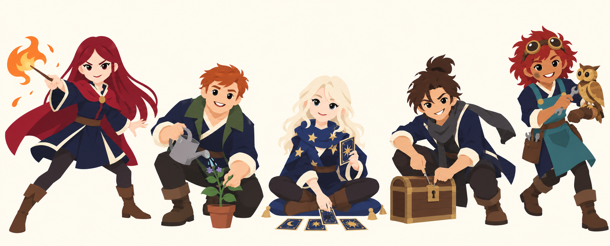
Lyra Vaneshade
Duelling with flame
Action and source
A forward duelling lunge, directing a small flame from her wand; her crimson shoulder cape swings back.
lyra.prodigy · content/world/facts/lyra.grim:4
Tobias Fennick
Watering a delicate herb
Action and source
Kneeling on one knee, carefully watering a small potted herb, his free hand supporting its delicate stem. Make his broad shoulders and large gentle hands clear.
tobias.scholarship · content/world/facts/tobias.grim:3
tobias.plants · content/world/facts/tobias.grim:7Seraphine Hale
Reading a tarot spread
Action and source
Seated cross-legged on a low cushion, turning a tarot card over a small spread; her head is lifted in a dreamy, perceptive glance. Keep both feet and her star scarf visible.
seraphine.seer · content/world/facts/seraphine.grim:3
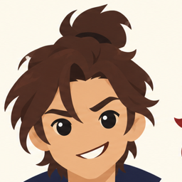
Corvin Ashby
Picking a chest lock
Action and source
In a low crouch, picking the lock of a small wooden chest, with a crooked grin directed toward the viewer; his charcoal scarf trails behind.
corvin.locks · content/world/facts/corvin.grim:3
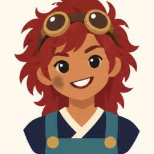
Mir Ten
Repairing the clockwork owl
Action and source
Leaning forward in an eager, slightly off-balance step, tightening a small spanner on their brass clockwork owl perched on their other forearm. Goggles stay above the eyes.
mir.artificer · content/world/facts/mir.grim:4
mir.owl · content/world/facts/mir.grim:8
Students · authority, frost and illusion
Open full size ↗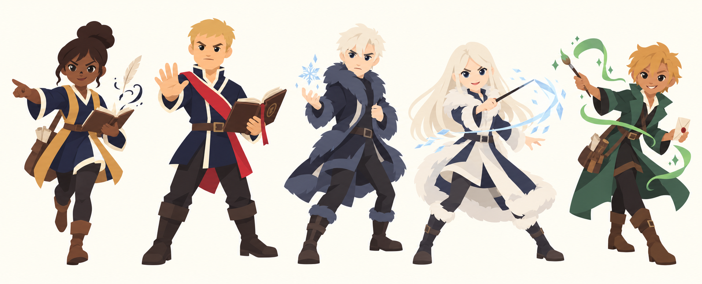
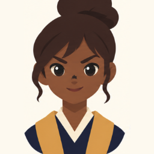
Nessa Quill
Rushing into an interview
Action and source
Striding briskly into an interview with an open notebook in one hand and an emphatic pointing gesture in the other; her self-writing quill floats beside the notebook.
nessa.editor · content/world/facts/nessa.grim:3
Bram Hollis
Stopping a corridor offender
Action and source
Planting his boots wide to block a corridor, an open demerit ledger in one arm and his other palm raised in an officious stop gesture.
bram.prefect · content/world/facts/bram.grim:3
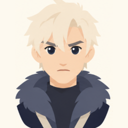
Kael Dumont
Quietly forming a snowflake
Action and source
Half-turning in a guarded backward step, quietly forming one small snowflake above his open palm while his other hand pulls his dark fur-lined coat close.
kael.north · content/world/facts/kael.grim:3
kael.cold_hands · content/world/facts/kael.grim:7Ilse Dumont
Practising Northern frost-craft
Action and source
Braced in a sharp duelling stance, drawing an angular hexagon of frost with a wand; her white furs swing with the movement.
ilse.furs · content/world/facts/ilse.grim:3
ilse.frost_craft · content/world/facts/ilse.grim:12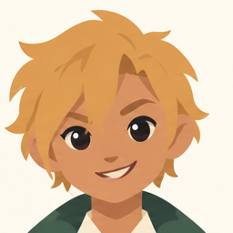
Tamsin Reed
A theatrical illusion flourish
Action and source
Making a theatrical half-bow, sweeping a paintbrush to conjure a little floating green illusion ribbon; a folded pen-pal letter is tucked in their free hand.
tamsin.theatre · content/world/facts/tamsin.grim:7
tamsin.thornwick · content/world/facts/tamsin.grim:3
Faculty · authority and care
Open full size ↗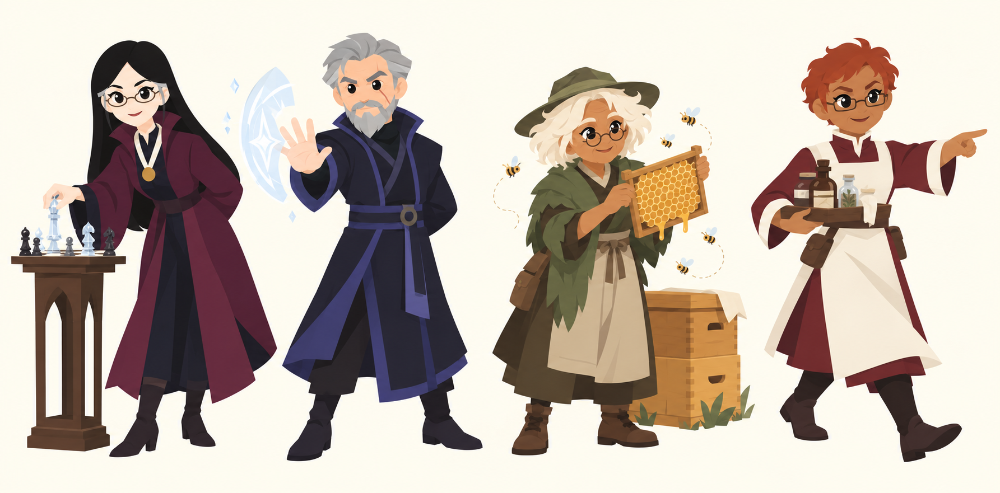
Headmistress Isolde Marrow
Placing a tower-chess piece
Action and source
Leaning forward just enough to place a crystal tower chess piece on a small board on a narrow pedestal beside her; the other hand rests behind her back.
isolde.chess · content/world/facts/isolde.grim:12
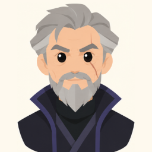
Professor Aldric Thorne
Demonstrating a ward
Action and source
In a firm teaching stance, projecting a pale shell-shaped ward from one open palm, the other hand held behind his back; stern precision rather than an aggressive attack.
thorne.storm · content/world/facts/thorne.grim:3
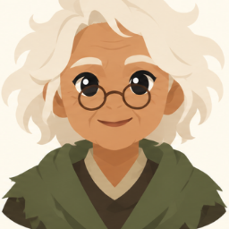
Old Maud
Tending the beehives
Action and source
Lifting a honey frame from a little hive, chatting to a few silvery bees; her beekeeping hat has its veil folded back so her wispy hair, spectacles and face remain visible.
maud.groundskeeper · content/world/facts/maud.grim:3
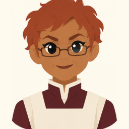
Sister Amaranth
Making infirmary rounds
Action and source
Striding purposefully on infirmary rounds, carrying a tray of tonic bottles in one hand and pointing firmly toward an unseen bed with the other.
amaranth.rounds · content/world/facts/amaranth.grim:12
Faculty and village · craft and hospitality
Open full size ↗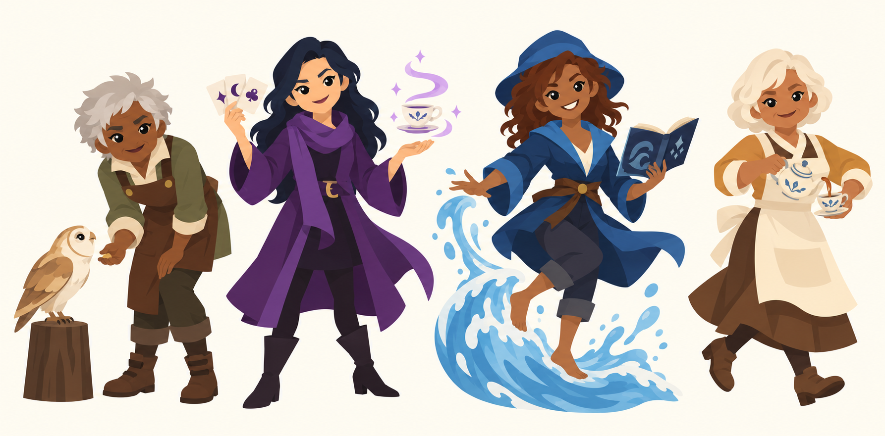
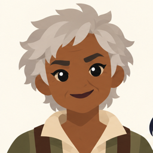
Professor Hedda Brask
Offering food to the old owl
Action and source
Bending in a respectful small bow to an old barn owl perched on a low wooden block, offering a morsel in an open palm.
brask.beasts · content/world/facts/brask.grim:3
brask.owl · content/world/facts/brask.grim:12Professor Ottilie Vey
Revealing an illusory teacup
Action and source
Making an elegant theatrical flourish, fanning a few playing cards in one hand while revealing an illusory teacup above the other, with one eyebrow lifted.
vey.illusion · content/world/facts/vey.grim:3
vey.tests · content/world/facts/vey.grim:7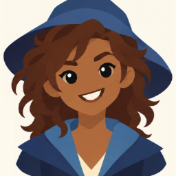
Professor Ines Marisol
Riding a wave with her poetry
Action and source
Balancing barefoot on a small curling wave, guiding it with one hand while holding an open poetry book in the other; hat tipped back and face delighted. Both feet remain visible above the water.
marisol.tides · content/world/facts/marisol.grim:3
marisol.poems · content/world/facts/marisol.grim:7
marisol.storms · content/world/facts/marisol.grim:12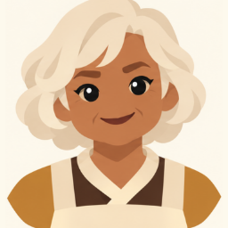
Mabel Thistlewood
Pouring tea on the move
Action and source
Pouring tea from a small pot into a cup held in her other hand, one heel lifted as she bustles forward; a brisk, knowing smile.
mabel.teashop · content/world/facts/mabel.grim:3
mabel.door · content/world/facts/mabel.grim:7
Village · books, remedies and loans
Open full size ↗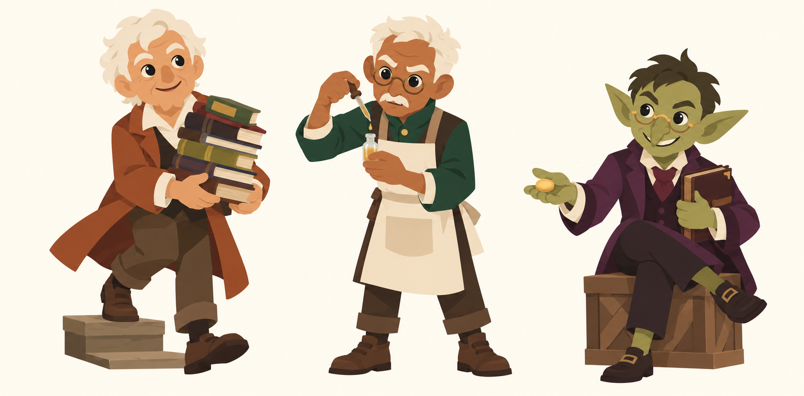
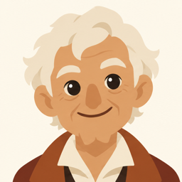
Mr Alder Grimsby
Balancing a stack of books
Action and source
Stepping down from a little bookshop step, balancing a slightly teetering stack of books in both arms while looking up with absent-minded enthusiasm. Keep his face unobscured.
grimsby.books · content/world/facts/grimsby.grim:3
grimsby.wrong · content/world/facts/grimsby.grim:7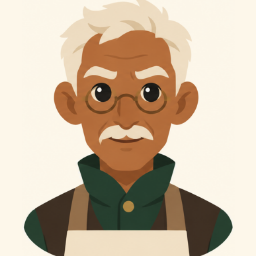
Old Pell
Counting tincture drops
Action and source
Leaning forward with exact concentration, counting a single drop from a pipette into a small vial held at chest height, lips forming a number.
pell.apothecary · content/world/facts/pell.grim:3
pell.counting · content/world/facts/pell.grim:7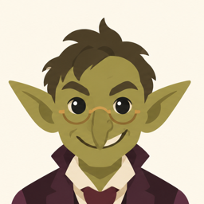
Grisk
Offering a loan
Action and source
Perched on a low crate, one leg crossed and the other shoe on the ground, courteously offering a gold coin while keeping his fat ledger tucked close in the other arm.
grisk.lender · content/world/facts/grisk.grim:3
grisk.ledger · content/world/facts/grisk.grim:7